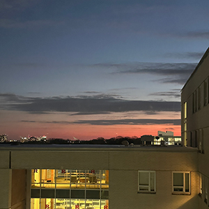
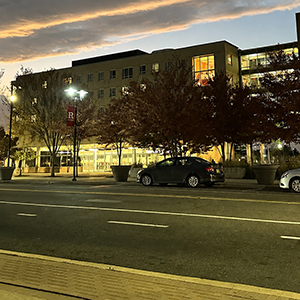
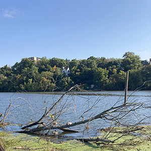
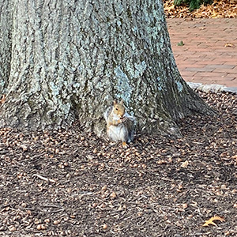
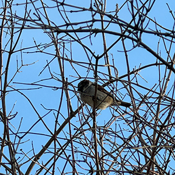
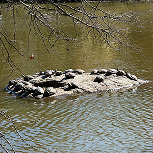

Expectation vs. Reality: A Morning of Birdwatching at Rutgers
From sunrise silence to crowded campus paths, a visual essay about slowing down and noticing birds in everyday spaces.
Introduction
At 6:15 in the morning, Rutgers is a completely different campus. The sidewalks are empty from the usual hustle and bustle of kids on their phones rushing to class, the streets lack the loud whoosh of buses as they break at stops, and the loudest sounds come from birds hidden somewhere in the trees above.
Birding often looks majestic. Graceful birds perched in perfect light, binoculars raised at just the right moment. Before my first outing, I imagined quiet trails, easy sightings, and instant spotting. The reality, however, was much more chaotic… and much more interesting.
I first started out my bird watching journey when I took a class at Rutgers called “Field ID Birds”. It satisfied one of my elective requirements and I figured it would be an easy and fun addition to my STEM heavy schedule. What I wasn’t prepared for, was how much I would tune into my senses and how much of my time would be spent just watching and waiting.
I wanted to make this page as a way to actually show what birdwatching is like rather than the glorified adventure that everyone makes it out to be. Follow along as I map out an early morning birding session, and how campus comes alive in the early morning.

Expectation
I imagined birding as a calm and cinematic experience. Birds would be easy to find and would sit still so I could admire their colors and patterns. With a quick glance through binoculars, I would quickly identify each species. This perfect little bubble popped instantly when I went on my first birding trip. Birding is one of those things that need to happen early in the morning. As such, I got up begrudgingly and got ready for the day before the sun was even up. I donned my sunscreen and binoculars and stepped outside. I was immediately met with a wall of cold air and, as I exhaled I could see my breath.
I got into my car as it, like me, hesitated to get started. I drove to the Raritan River just as the sun was starting to rise. As its light started shining on my dashboard, I started to rise as well. I felt excited for all of the birds that I would see. I got out of my car, grabbed my backpack filled with my guide, a camera, a notebook and pencil, some snacks, and my water, and I rushed towards the river.
I was ready to see all of the birds jump out at me…


Reality
In reality, birds are a lot more elusive and difficult to cooperate with. They dart between branches, disappear into high trees and often reveal themselves only through brief blurs of movement. Instead of clear views, I found myself staring into trees, trying to match distant calls to unseen birds. Even when I spotted one, it was often gone before I could fully process what I was seeing.
As the sun continued to rise into the sky, I felt a ping of disappointment. All I had seen was a Canada goose as it waddled past me almost mockingly. I could see a whole bunch of those from the comfort of my own bed. I wanted to see more. I paused and listened as I heard a branch snap overhead. What could that be? Could it be a blue jay… or perhaps a woodpecker? I look up and two pairs of brown eyes and a bushy tail are looking back at me. A squirrel. I laugh because it is so cute, but I came here to see birds, not squirrels!


What You Learn
Over time, the challenge became part of the adventure. Birding shifted from recognition to careful observation. You focus more on listening for calls, noticing movement, and appreciating subtle details. Instead of chasing perfect sightings, I began to value the process itself. The unpredictability became meaningful.
Lots of time has passed since my first birding adventure (fail). However, I have come to learn so much. What was once a struggle to get out of bed, was now something I looked forward to. What was once a disappointment when I only saw one or two birds was now a challenge to see if I could find more next time. I found that even the common Canada goose was something I yearned to see. Last spring, I even got to see the cutest little puffballs (goslings)!


Conclusion
Birdwatching is not about perfectly spotting every bird. It’s about learning how to see. It requires one to be patient and attentive. In the shift to becoming more observant, birding becomes less about the birds you identify and more about the experience of looking for them. This is why I made this website. I want more people to wake up before the sun, appreciate the quiet and calmness around them, keep an eye out for the most unexpected visitors, and most of all, appreciate the nature that is around you. Who knows, you might even become best friends with a bushy tailed squirrel in the process! Make sure to follow along for more stories about my birdwatching successes...and failures.